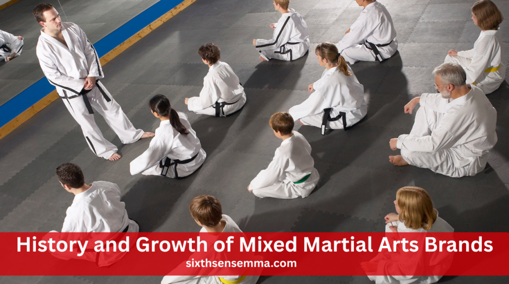
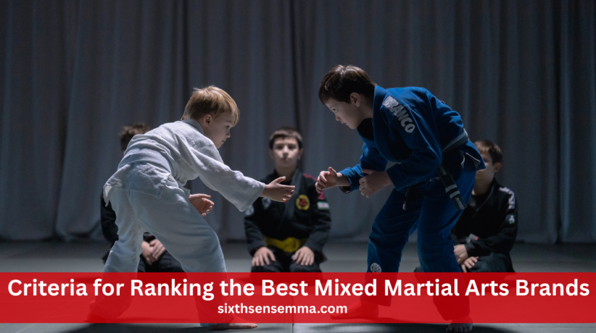
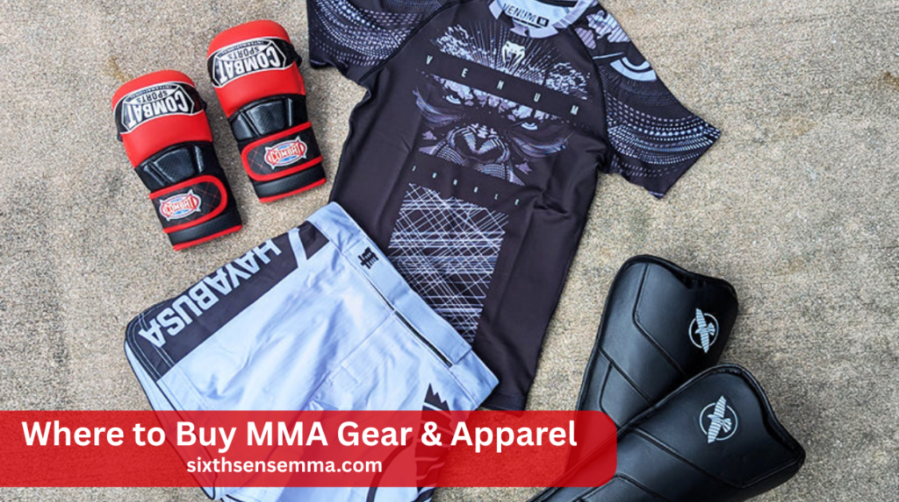

Top Mixed Martial Arts Brands for Gear & Apparel

Mixed martial arts brands play a big role in every fighter’s journey whether you’re just starting out or stepping into the cage. These brands create the gloves, shorts, and gear that keep fighters safe, comfortable, and performing at their best. In this guide, we’ll explore the top MMA brands, what makes them stand out, and how to choose the right one for your style and goals.
What Are MMA Brands?
Mixed martial arts brands design and sell gear, apparel, and accessories made specifically for MMA training and fighting. These include gloves, shorts, rash guards, and protective equipment. A good MMA brand focuses on performance, comfort, and durability to help fighters train safely and effectively at all levels.
History and Growth of Mixed Martial Arts Brands
Mixed Martial Arts Brands evolved alongside the sport’s explosive rise, especially with the global success of the UFC. What began as functional gear for cage fights quickly became a blend of performance, style, and streetwear. As MMA reached gyms and fans worldwide, brands expanded their products to serve both athletes and lifestyle enthusiasts.
Role of Branding in Combat Sports
Branding builds a fighter’s trust in gear. A well-known logo often represents safety, durability, and tested performance. Fighters wear brands they believe in, and fans follow their lead. Strong branding also connects athletes emotionally to the sport, turning gear into a symbol of identity, commitment, and pride within the MMA community.
Mixed Martial Arts Brands Brands vs Traditional Martial Arts Brands
Traditional martial arts brands typically focus on single-discipline uniforms and basic gear—karate gis, judo belts, or taekwondo pads. Mixed Martial Arts Brands brands, however, design for hybrid training needs. Their gear blends flexibility, toughness, and innovation to support striking, grappling, and conditioning—all essential for MMA’s fast-paced, all-around combat environment.
Also Read Our Article: Brazilian Jiu Jitsu Orlando: Classes, Gyms & Tips
What Makes a Good MMA Brand?
A good MMA brand stands out with quality gear, smart design, and real fighter approval. It focuses on durability, comfort, and performance. These companies respond to athlete feedback and innovate continuously. They offer gear that supports training, prevents injuries, and suits different fighting styles—earning trust from beginners to pros alike.
Build Quality and Material Standards
Top Mixed Martial Arts Brands use high-grade leather, reinforced stitching, and moisture-resistant fabrics. Their gear is made to handle intense use—sparring, rolling, and bag work. A good brand focuses on durability and comfort, reducing the risk of wear and tear, and keeping fighters protected throughout tough training sessions and fights.
Athlete Endorsements and Trust
Fighter endorsements boost brand credibility. When professionals use certain gloves, shorts, or shin guards, it shows the gear is trusted at elite levels. These endorsements also help newer athletes make confident choices, knowing the gear they’re buying is backed by the experience and success of top-tier fighters.
Innovation and Product Design
Innovation keeps Mixed Martial Arts Brands competitive. Whether it’s better glove ergonomics, quick-dry rash guards, or lighter shin guards, great brands focus on evolving gear to meet modern training demands. They listen to athletes, run performance tests, and constantly upgrade designs to stay ahead in performance, safety, and comfort.
Customer Feedback and Reputation
Customer reviews are a brand’s reality check. Fighters talk—online, in gyms, and through social media—about what gear works and what doesn’t. Brands that respond to feedback and deliver consistent quality earn loyal customers. A strong reputation isn’t just built on marketing; it’s proven through real-world results and satisfaction.
Why Choosing the Right Mixed Martial Arts Brands Matters
Picking the right Mixed Martial Arts Brands affects your training, safety, and overall experience. Quality gear supports better performance and reduces injury risk. Trusted brands offer reliable products that last longer and match your specific fighting style. Choosing wisely helps you train with confidence and get the most value from your gear investment.
Impact on Performance and Training
Training with the right gear boosts your performance. Whether it’s gloves that fit just right or clothing that moves with your body, quality gear helps you stay focused. A trusted brand supports proper technique and lets you train longer, harder, and smarter—helping you improve faster and with more confidence.
Injury Prevention and Gear Safety
Low-quality gear puts you at risk. Weak stitching, poor padding, and bad fit can cause injuries. Top Mixed Martial Arts Brands use durable materials, strong construction, and ergonomic designs to protect your joints, skin, and muscles. Investing in trusted gear keeps you safe through tough rounds and hard sparring sessions.
Long-Term Value and Investment
Good gear might cost more upfront, but it saves you money over time. High-quality gloves or rash guards won’t rip or wear out quickly. Instead of replacing cheap equipment again and again, investing once in reliable gear from a known brand gives you long-lasting value and consistent performance.
Brand Compatibility with Fighting Style
Every fighting style has different needs. Strikers need firm gloves and shin guards, while grapplers need flexible clothing that won’t tear. Some brands focus more on striking, others on ground fighting. Choosing a brand that matches your style ensures comfort, protection, and better performance during your training sessions.
Criteria for Ranking the Best Mixed Martial Arts Brands

When ranking Mixed Martial Arts Brands, we look at several key factors: the variety of products they offer, how affordable and fairly priced their gear is, how popular the brand is among pro fighters, and how easy it is to buy their gear worldwide. These points help fighters find brands that are trusted, accessible, and reliable.
Product Variety and Specialization
Top Mixed Martial Arts Brands offer everything you need—from gloves and shin guards to rash guards and gym bags. Some brands specialize in areas like grappling or Muay Thai gear. Variety and focus show that a brand understands fighters’ needs and can support every part of your training and competition.
Pricing and Affordability
A great brand isn’t just expensive—it balances cost with quality. Top MMA brands offer gear across different price ranges, so whether you’re just starting or training professionally, you can find solid options. Affordable lines still meet high standards, giving beginners access to reliable gear without spending too much.
Popularity Among Professionals
When UFC fighters or champions wear a brand, it means the gear can handle intense use. Popularity among pros isn’t just hype it shows that the brand meets elite standards. Seeing a brand in top gyms and on fight nights is a strong sign it’s trusted by serious athletes.
Global Reach and Accessibility
The best MMA brands are available around the world. Whether you’re in North America, Europe, or Asia, top brands have online stores and global shipping. Easy access means more fighters can use high-quality gear, and it’s easier to find support, sizing, or replacements when needed.
Leading Mixed Martial Arts Companies for Equipment & Clothes
Some MMA brands stand out for their top-quality gear and stylish apparel. These leading names are trusted by fighters at all levels. Whether you need durable gloves, rash guards, or training shorts, these brands combine performance with comfort. They’re popular in gyms, competitions, and even everyday wear thanks to their design and reliability.
Venum – Official UFC Partner
Venum is the official gear provider for the UFC, making it a top choice for professionals. It offers bold, battle-tested gear like gloves, shorts, and rash guards. Known for durability and eye-catching designs, Venum is trusted by elite fighters and is a go-to brand for serious training and competition.
Hayabusa – High-Tech Fight Gear
Hayabusa is famous for combining science and sport. Its gear features advanced materials, ergonomic fits, and sleek designs. Their gloves offer wrist protection, and their apparel supports movement and breathability. Hayabusa is ideal for fighters who want innovation, safety, and style in every training session.
Fairtex – Trusted by Strikers
Fairtex began in Muay Thai but has become a favorite in MMA, especially among strikers. It’s known for heavy-duty gloves, pads, and shin guards that can take a beating. Built for power and precision, Fairtex gear is widely respected in gyms worldwide and perfect for stand-up training.
RVCA – Style Meets Performance
RVCA mixes lifestyle with martial arts. Their gear is stylish enough for the street and strong enough for the mat. It’s a great option for athletes who value comfort, design, and versatility. With collaborations and endorsements from fighters, RVCA has grown into a leading name in MMA fashion.
Emerging and Niche MMA Brands to Watch
Not all great MMA gear comes from big names. Some smaller or newer brands are gaining popularity for their unique styles, innovative gear, and strong focus on fighter needs. These up-and-coming brands often bring fresh designs and specialize in certain areas like grappling or striking, making them worth watching if you want something different from the mainstream.
Scramble – Grappling-Focused Innovation
Scramble stands out in the grappling community, especially among BJJ and MMA cross-trainers. Their gear is built for comfort, creativity, and performance, with eye-catching designs that break the mold. Scramble blends function and flair, making it a top pick for athletes who want something different yet dependable on the mats.
Tatami – Unique BJJ and MMA Blend
Tatami is well-respected in Brazilian Jiu-Jitsu circles and has successfully expanded into MMA. Their gear is high-quality, comfortable, and stylish. Fighters appreciate their attention to detail and performance-driven designs. Tatami continues to grow as a favorite for those who want reliable gear with a clean, modern look.
Engage – Modern Designs, Rising Popularity
Engage is quickly making its mark with bold, modern gear that attracts the younger MMA crowd. They focus on sleek designs, quality construction, and athlete feedback. Both the amateur and professional circuits are seeing an increase in the use of Engage. It’s a brand to watch for fighters who want gear that performs and pops.
How to Pick the Best Brand for Your Requirements
Choosing the right MMA brand depends on your goals, experience level, and training style. Strikers, grapplers, and all-rounders need different gear. Consider factors like comfort, durability, and price. Research reviews, test gear if possible, and match your brand choice to your needs for the best performance and long-term satisfaction in your training.
Identifying Your Training Goals
Every fighter has different goals. Whether you’re into striking, grappling, or all-around MMA, choose a brand that aligns with your focus. Strikers may need gear with extra protection, while grapplers look for flexibility and grip. Knowing your training style helps narrow down the best brand for your needs.
Matching Gear to Your Skill Level
Not all gear is made for everyone. Beginners often start with affordable options that offer good protection, while advanced fighters may require premium gear for peak performance. Match the brand’s products with your experience level to get the most value and comfort during training and sparring.
Balancing Style with Functionality
Style is great—but function comes first. Choose gear that fits well, performs under pressure, and holds up over time. Brands like Hayabusa and RVCA deliver both looks and performance. Finding that balance ensures you not only look sharp but feel confident and protected during every session.
Also Read Our Article: Muay Thai Punching Bag: Power Up Your Strikes Fast
Where to Buy MMA Gear & Apparel

You can buy MMA gear online or in physical stores. Popular websites like Amazon, MMAWarehouse, and brand-specific sites offer variety and convenience. Local gyms or combat sports shops allow you to try gear before buying. Each option has pros and cons—choose based on what fits your budget, preferences, and need for quality assurance.
Online MMA Stores and Brand Websites
Online stores like MMAWarehouse, Amazon, and official brand websites offer a wide range of gear with filters, reviews, and delivery options. Shopping online gives you access to the latest collections, sales, and exclusive releases, making it easy to find exactly what you need.
Local Gyms and Combat Sports Shops
Many MMA gyms sell gear or partner with nearby fight shops. Buying locally allows you to test the fit, feel the materials, and get advice from coaches or teammates. It’s a great way to ensure quality and get a better idea of what works best for your training needs.
Pros and Cons of Buying Online vs In-Store
Online shopping is convenient with a bigger selection, but you can’t test the fit or feel. In-store shopping lets you try before buying, but the stock may be limited. Consider your priorities—whether it’s variety, pricing, or fit—and choose the method that suits you best.
Conclusion
Choosing the right mixed martial arts brands can boost your training, protect you from injuries, and reflect your fighting style. Whether you go with a top name like Venum or explore rising brands like Engage, quality and fit matter most. Always match gear to your needs, read reviews, and invest in trusted products. The right brand makes a big difference both in performance and confidence.
FAQ’s
MMA (Mixed Martial Arts) is the sport itself, combining various fighting styles. UFC (Ultimate Fighting Championship) is the largest organization that promotes MMA events. UFC is to MMA what the NBA is to basketball.
Venum is widely regarded as one of the best MMA brands due to its UFC partnership and quality gear. Hayabusa and Fairtex are also top choices. The best brand depends on your training style and needs.
UFC fighters wear Venum during official events as part of the UFC’s outfitting deal. In training, fighters use brands like Hayabusa, Fairtex, and RVCA. Personal preference plays a big role outside the Octagon.
Islam Makhachev lost to Adriano Martins in 2015 by first-round knockout. It remains his only professional defeat. Since then, he has become one of the top fighters in the UFC.
Bruce Lee is often considered the father of MMA for blending different martial arts styles. His philosophy inspired modern MMA. He believed in using what works from every discipline.
The four core pillars of MMA are striking, grappling, wrestling, and submission. These elements create a complete fighter. Mastery of all four is essential for success in modern MMA.
The United States is the most prominent MMA hub due to the UFC. Brazil and Russia are also known for producing elite fighters. MMA is now growing fast in Asia and Europe.
Conor McGregor fights as a southpaw, meaning he’s left-handed. His powerful left hand is one of his biggest weapons. He’s known for precision and knockout ability from that stance.
Train with us in Coppell
The first class is free. Shorts, a t-shirt and a water bottle. We lend the rest.
Book a free class